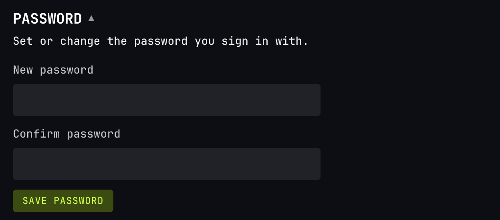

Quick start on your own server
Install the server with one command and sign in.
Uptime Orchestrator manages a fleet of Raspberry Pi boards from one web UI. You adopt devices, install operating systems on them over the network, and control who logs in and what runs on them.
What you need
- An x86-64 or arm64 machine or VM running Debian or Ubuntu, with 4 GB of RAM and disk space for your OS images. A Raspberry Pi 5 with an SSD works as the server. The installer installs Docker on Ubuntu. On another distribution, install Docker first.
- Root, or a user who can use
sudo. - A name or address for the server. On a local network, ports 80 and 50051 must be free. From the internet, you need a public DNS name that points at the machine, with ports 80, 443 and 50051 open.
- Free loopback ports 8080, 8088 and 50052.
- Devices: Raspberry Pi 4, Raspberry Pi 5, Compute Module 4 or Compute Module 5, on Ethernet.
A self-hosted install manages 25 devices free (the device limit).
Run the installer
On the server, run:
curl -fsSL https://get.orchestrator.sh | shIt asks a few questions, runs its checks, and asks Install now? (y/n) before it changes anything.
- How will your devices and your browser reach this server? Pick
1for a local network or2for the internet. - Name or address the devices should use (local network). Accept the offered name or give the machine's address. A
.localname is refused because a Pi bootloader can't resolve it. - DNS name that points at this machine and an email for Let's Encrypt (internet). The email can stay empty.
- Set up network boot? (y/n) Answer
yif you want to boot blank devices from the server and install their OS from the web UI. It downloads a recovery image of about 100 MB and creates a signing key. - Email address the owner signs in with. This becomes the first account, and it owns the server.
Everything goes into ./orchestrator under the directory you ran the command from. Every question is also a flag for an unattended run (install.sh --help, INSTALL.md).
If a step fails, run the installer again with the same answers. It keeps what it already wrote and skips finished steps. If the certificate doesn't arrive, check that the DNS name resolves to the machine's public address from outside and that port 80 is open, then run docker restart orchestrator-proxy.
The run ends with the address to open and where the owner password is. It also names two files to copy somewhere safe, off the machine.
Sign in
- Open the address the installer printed.
- Enter the owner email in Your Email and the contents of
./orchestrator/owner-passwordin Password, then click Sign In.
You land on Nodes. It is empty on a new server; the picture shows one with devices already added. Sign-up is closed, so colleagues join by invitation (Team and security).

Change the generated password
- Click the round badge with your initials at the top right, then Account.
- Expand Password.
- Type the new password in New password and Confirm password. It needs at least 8 characters.
- Click Save password, paste the generated password into Current password, and click Confirm.
- Delete the file on the server with
rm ./orchestrator/owner-password.
The installer names the account "My Account". To rename it, open the same menu, then Team Management → Organization → Rename.

Two-step verification and Passkeys are on the same tab. If you lose the password and the server has no mail relay, reset it from the server with --reset-password (INSTALL.md).
Add your first device
Go to Nodes → Add node, as the installer's final message says. Add a device covers each way in.